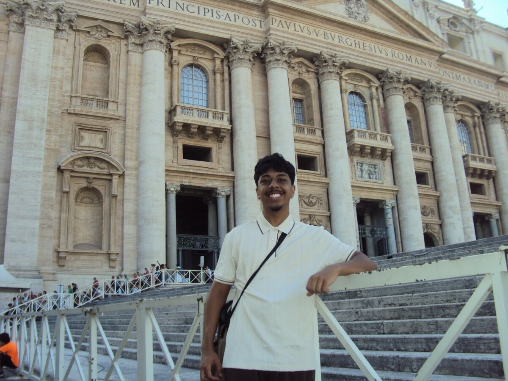
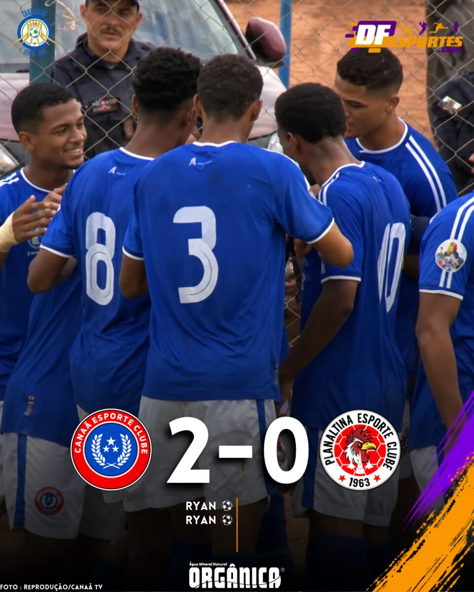
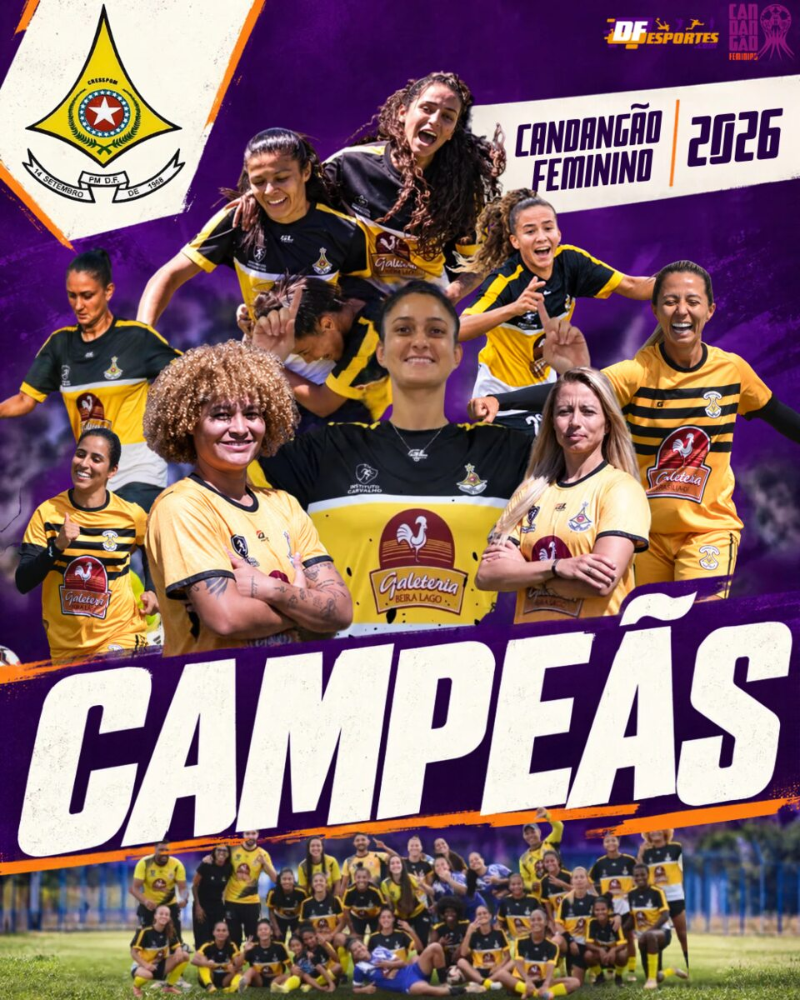
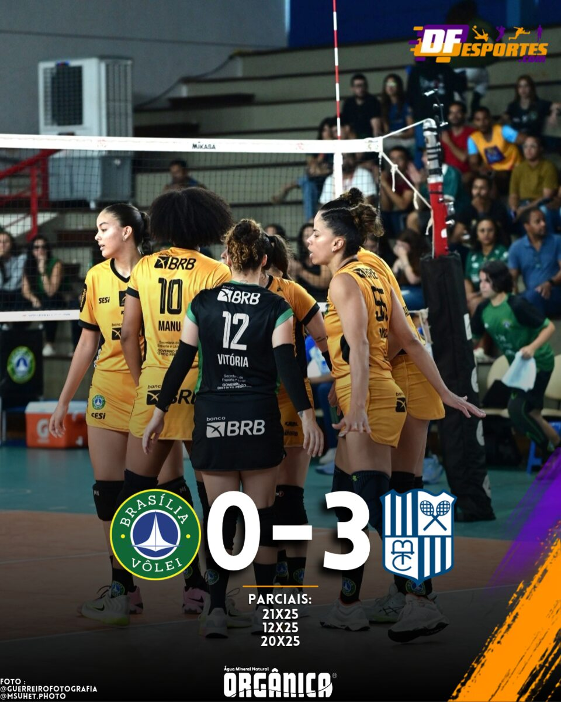
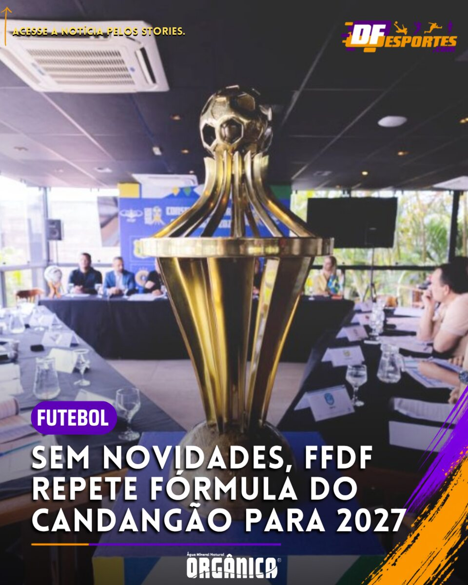
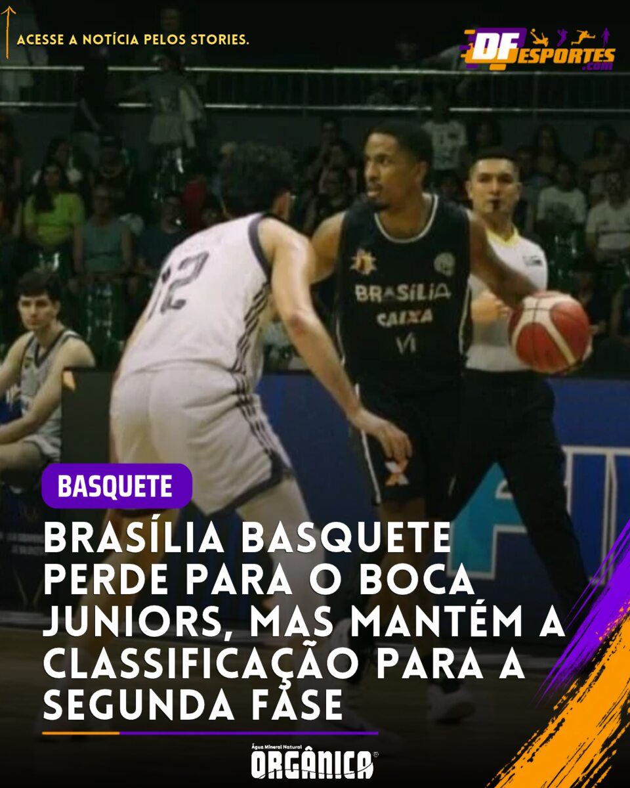
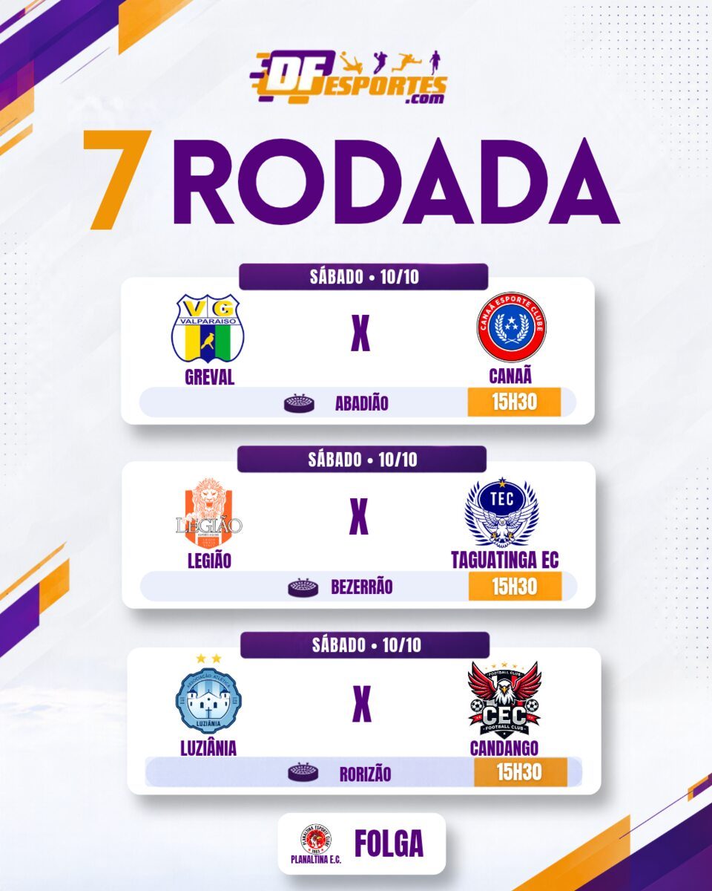
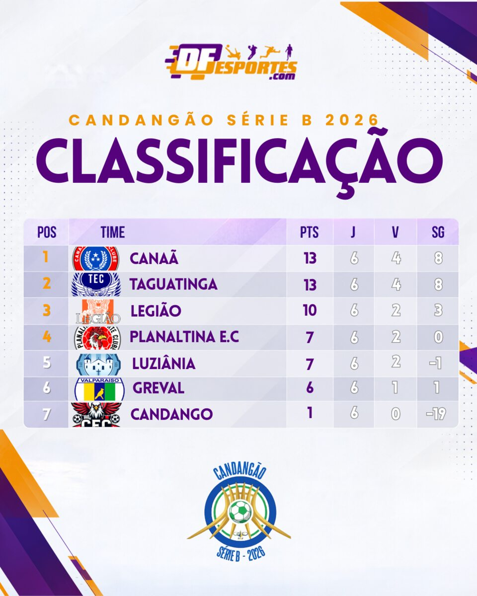
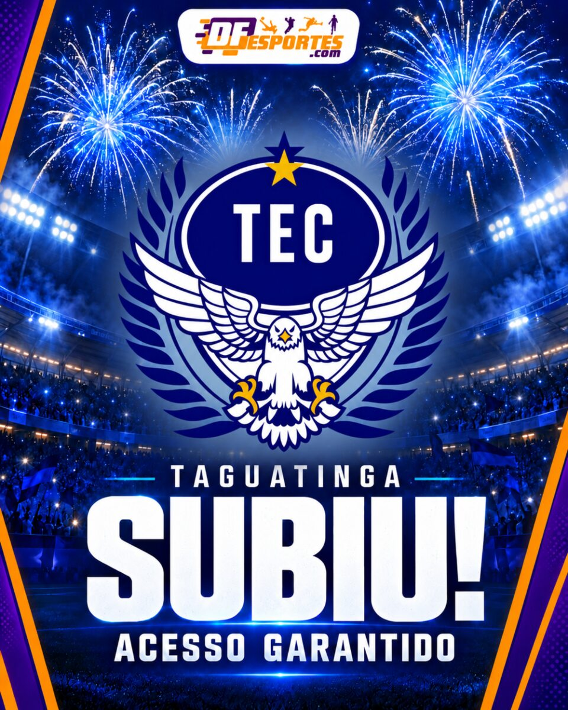
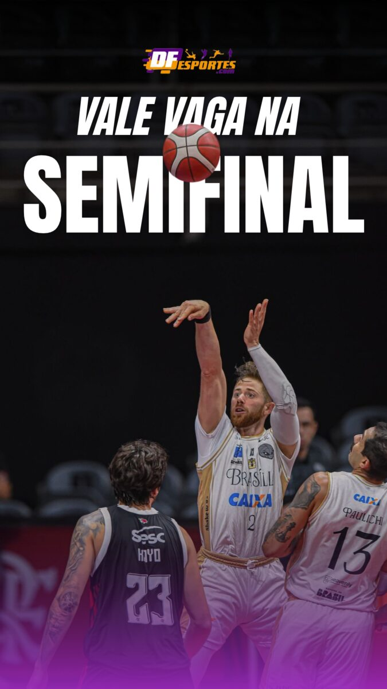

AUTOMAÇÃO / 01
RSS→Python→Telegram
Python · Automação
DF Esportes — Automação
Fluxo de coleta de notícias, títulos e imagens para Telegram, agilizando a criação manual das artes no Canva.
Ver código ↗Sou Jayme Neto, estudante de ciência da computação e editor de vídeo. Conecto código, inteligência artificial e audiovisual para transformar ideias em experiências digitais.

Explore meus trabalhos em três áreas diferentes.
Projetos de estudo e protótipos que exploram soluções digitais, automação e desenvolvimento de sistemas.
Fluxo de coleta de notícias, títulos e imagens para Telegram, agilizando a criação manual das artes no Canva.
Ver código ↗Protótipo de planejamento de rotas com busca em grafos, interface mobile e rede fictícia.
Ver código ↗Projeto educacional para explorar fundamentos de segurança digital e boas práticas.
Ver código ↗Redesign independente de catálogo digital, com filtros, pesquisa e lista de interesse.
Ver código ↗Projeto de estudo para transformar dados de notícias em indicadores editoriais.
Ver código ↗Trabalho acadêmico de banco de dados voltado a eventos universitários.
Ver código ↗Edição, captação e narrativa visual: do conteúdo esportivo à produção criativa.
Registro e edição de uma partida de vôlei.
Produção de vídeo vertical para redes sociais.
Artes esportivas, comunicação visual e experiências interativas. Canva avançado, edição de imagens e inteligência artificial.
Trabalhos pontuais de comunicação visual: resultados, notícias, classificação e artes comemorativas.









Criação e composição visual de Jayme Neto. Marcas e fotografias pertencem aos respectivos titulares; créditos originais preservados nas peças.
Carrossel educativo desenvolvido para a Dra. Tamara, com cinco dicas de autocuidado e uma linguagem visual clara e minimalista.
Ver carrossel completo no Instagram ↗Criação de convites personalizados e páginas de confirmação de presença integradas ao Google Planilhas por API.
Produção de convites temáticos inspirados em universo de corrida e contos de fadas, combinando composição visual, animação com IA e edição de vídeo.
Automatizei a coleta de títulos e imagens de notícias para o Telegram, agilizando o processo de criação manual das artes no Canva.
Ver repositório ↗Conheça quatro projetos reais em PDF e dois convites animados. Confira os convites originais, com seu design e recursos interativos.
Projetos originais de design e audiovisual publicados com autorização.
Editor de vídeo e apoio em IA e dados
Edição de vídeos convencionais e geração de conteúdo com ComfyUI e Higgsfield. Apoio em atividades básicas de banco de dados.
Editor de vídeo e filmmaker
Captação audiovisual, edição de vídeos e fotografias e cobertura de eventos.
Artes esportivas, convites digitais, vídeos com IA e páginas de confirmação integradas a planilhas.
Atendimento, organização de pedidos, estoque e apoio à comunicação digital.
Universidade Católica de Brasília (UCB)
Imersão no inglês e vivência internacional.
Fluente · Curso completo no CNA · Cambridge Linguaskill B1 (2024).
Harvard University · 30 horas. Formação em edição de vídeo, marketing e design (Hotmart).
Interessado em oportunidades em tecnologia e produção audiovisual. Entre em contato!